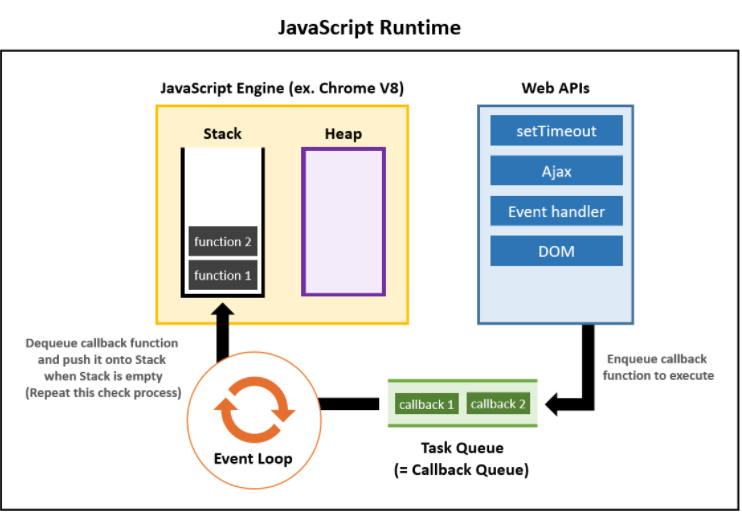

stack
자바스크립트 코드가 실행되면 실행 될 명령들(스택 프레임)이 쌓이는 장소.스택에 새로운 프레임들이 들어오고 실행이 완료되면 나간다.
드럼통처럼 생겨서 First In Last Out 구조의 자료형이다. (먼저 들어온 것이 나중에 나가는 구조 ..)

Heap
동적으로 생성된 변수들은 메모리 heap에 저장된다.
테스크 큐(Queue)
웹 api로부터 받은 테스크를 큐에 저장해 둔다.스택이 비워지면 이벤트 루프가 큐에 아이템을 꺼내다가 스택으로 올려준다.
First In First Out의 자료구조 형태이다.

Even Loop
스택과 큐 사이에서 흐름을 제어한다.이벤트 루프는 스택이 비어있는지를 확인하고, 비어있으면 큐에 있는 아이템을 꺼내다가 스택에 올려준다.
웹 api
Ajax 요청, setTimeOut(), 이벤트 핸들러의 등록과 같이 웹 브라우저에서 제공하는 기능들을 말한다.이들은 자바스크립트의 쓰레드(스택)에서 작업이 이루어지는 것이 아닌 별도의 쓰레드에서 이루어진다.
setTimeOut(함수, 시간)
Ajax, Axios, fetch : 클라이언트와 서버 간에 데이터를 주고 받는 기술Event Handler : 클릭과 같은 이벤트를 핸들링 하는 함수들
쓰레드(Thread)
쓰레드란 실제로 작업을 실행하는 주체이다.쓰레드는 한개이거나 여러개 일 수 있다.
자바스크립트는 싱글(1개)의 쓰레드만 있다.
쓰레드가 1개이면 하나씩 밖에 일처리를 못해서 동기적으로 일을 처리하게 된다.
멀티 쓰레드라면 (1개 이상) 여러개의 작업을 병렬적으로 처리할 수 있다.
자바스크립트는 싱글 쓰레드로 동기적 처리를 한다는 것을 필히 명심해야 한다.
API를 부르는 방식
ajax, axios, fetch가 있다.이 중에서는 fetch가 제일 간단하다.
ajax, axios는 React.js에서 많이 사용되기도 한다.
Promise
자바스크립트에서 비동기 동작을 다루는 ES6 최신 문법이다.기존에 콜백함수를 이용해서 비동기처리를 하였는데,
$.ajax("'http://api.newscatcher.com/v2/search", (result) => {console.log(result);});
위의 코드와 같은 방식이라면 url이 호출되고, 결과가 나오면 두번째 매개변수인 콜백함수를 불러서 result에 결과값을 넘겨 줬다.
이렇게 하면 가독성이 많이 떨어진다.(콜백 지옥)
함수 안에 함수, 그 안에 또 함수, 또 함수, 함수 함수...
그래서 나온 것이 Promise이다.
function delayP(sec) {
return new Promise((resolve, reject) => {
setTimeout(() => {
resolve("success");
}, sec * 1000);
});
}
newPromise를 이용해서 promise를 생성하고, promise 안에서는 resolve와 reject 함수를 자동으로 가진다.
resolve는 결과가 문제 없이 성공적으로 수행될 때 호출하는 함수
reject는 중간에 에러가 생기면 에러를 처리할 수 있는 함수
resolve가 호출되면 콜백 대신에 .then()이나 async / await를 이용해서 그 결과값을 받아내 다른 일들을 할 수 있다.
async / await
async와 await는 동기적인 자바스크립트를 비동기적으로 처리하기 위해 사용한다.fetch는 promise를 리턴한다. 그리고 우리가 필요한 건 그 promise 속에서 api 호출이 잘 이루어져 데이터를 받은 다음, promise가 성공적으로 resolve를 호출하기를 기다리는 것이다.
이걸 해주는 게 await이다.
await이 없으면 날 것 그대로의 promise가 리턴된다.
await을 쓰려면 함수를 async로 선언해야 한다. 즉 둘은 세트라고 생각하면 된다.
그 외에도 async로 함수를 선언하면, 그 함수는 자동으로 promise를 반환한다. 이 함수를 받아서 다른 비동기 작업이 가능하다는 이야기가 된다.
json
서버 클라이언트 통신에서 많이 쓰이는 데이터 타입(png, jpg와 같은 데이터 타입)객체와 똑같은 텍스트라고 이해하면 좋다.
간단한 텍스트인데 객체랑 똑같아 나중에 읽어오기도 매우 편하다.
그래서 json 타입을 서버 통신 시에 많이 사용한다.
fetch를 사용할 때의 패턴
let response = await fetch(url)let daa = await response.json()
위에 쓰인 패턴은 세트로 많이 사용된다. 익숙해지면 좋다.
API를 호출하고 싶을 때
const callAPI = async() => {let url = new URL(`url 주소`)
let header = new Header({헤더 내용})
let response = await fetch(url, {header : header})
let data = await response.json()
}